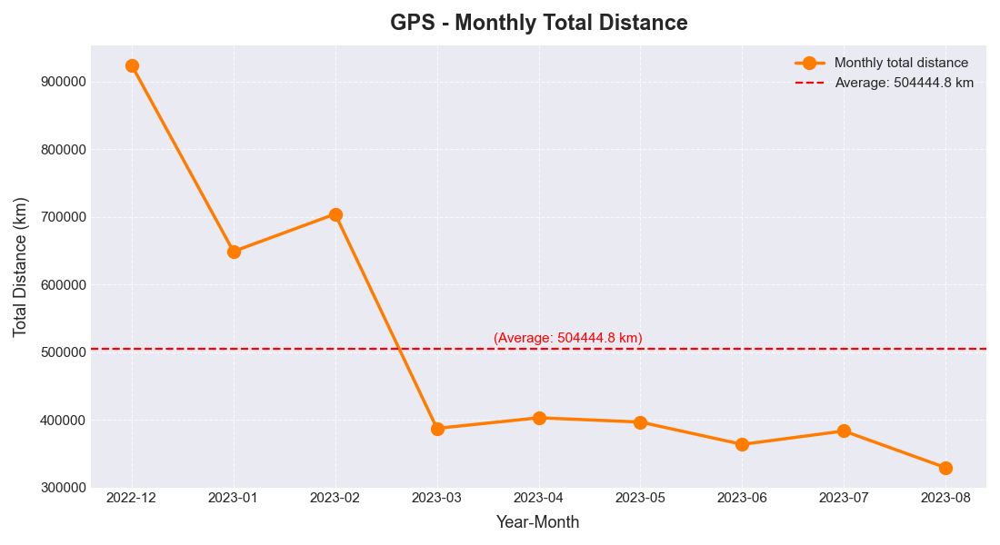

GPS 데이터 분석 결과
2022년 12월부터 2023년 8월까지의 주행 및 상태 데이터 요약
CSV 데이터 변수 요약
- 최종 데이터 행 수(모든 CSV 병합 기준): 18,337,801
- 전체 칼럼(변수) 수: 21개
- 주요 변수: device_no, time, direction, fuel_pct, hdop, lat, lng, mode, source, speed, state, lat_shift, lng_shift, dist_km, direction_shift, direction_delta, is_stopped, state_cat, mode_cat, measured_ym, hour, car_type
-
주요 고유값 수:
- device_no(디바이스): 117개
- time(타임스탬프): 11,604,341개
- lat(위도): 2,209,617개
- lng(경도): 2,118,805개
- speed(속도): 148종류
- hour(시간대): 24개(0~23시)
- state(상태): 3개 (Stopped, Moving, Unknown)
- 대부분 변수에 결측치 없음(모든 행에 값 존재)
Confusion Matrix (Stopped vs Unknown)
GPS의 'Stopped'(정지) 및 'Unknown'(알 수 없음) 상태를 구분한 Confusion Matrix입니다.
차량 미주행 구간의 위치 분류(판단) 정확도를 직관적으로 평가할 수 있습니다.
GPS의 'Stopped'(정지) 및 'Unknown'(알 수 없음) 상태를 구분한 Confusion Matrix입니다.
차량 미주행 구간의 위치 분류(판단) 정확도를 직관적으로 평가할 수 있습니다.
상관관계 매트릭스 (Correlation Matrix)
속도, 이동 거리, 방향, 시간대 등 주요 변수 간 상관관계를 요약한 행렬입니다.
전체적으로 상관계수가 0.01 내외로 직접적 연관성이 매우 약함을 알 수 있습니다.
속도, 이동 거리, 방향, 시간대 등 주요 변수 간 상관관계를 요약한 행렬입니다.
전체적으로 상관계수가 0.01 내외로 직접적 연관성이 매우 약함을 알 수 있습니다.
디바이스별 속도-거리 상관관계
각 기기(device_no)별 평균 속도와 누적 주행 거리의 관계를 분석합니다.
장거리 운행 디바이스일수록 평균 속도가 비교적 더 높게 나타나는 경향이 있습니다.
각 기기(device_no)별 평균 속도와 누적 주행 거리의 관계를 분석합니다.
장거리 운행 디바이스일수록 평균 속도가 비교적 더 높게 나타나는 경향이 있습니다.
시간대별 이동량 분포
하루 24시간 기준으로, 시간대별 주행/이동 기록 데이터의 분포를 시각화합니다.
출퇴근 시간대(7~9시, 18~20시)에 이동량이 집중되는 경향이 나타납니다.
하루 24시간 기준으로, 시간대별 주행/이동 기록 데이터의 분포를 시각화합니다.
출퇴근 시간대(7~9시, 18~20시)에 이동량이 집중되는 경향이 나타납니다.

월별 디바이스별 이동량 히트맵
2022년 12월부터 2023년 8월까지, 각 디바이스의 월간 누적 이동량을 색상 히트맵으로 표현한 그래프입니다.
월별로 활동량이 변하지 않고 꾸준한 디바이스는 모든 달에서 비슷한 색상 강도를 보여 일관된 운행 패턴을 확인할 수 있습니다.
반대로, 일부 디바이스는 2023년 3월~5월 사이에만 색이 진해지며 일시적으로 운행이 급증하고, 전후에는 색이 옅어져 활동이 거의 없었던 뚜렷한 변동이 나타납니다.
이처럼 히트맵을 통해 각 차량의 장기적·월별 운행 패턴, 특정 시기의 집중 운행 혹은 중단, 다양한 활동 특성을 한눈에 파악할 수 있습니다.
2022년 12월부터 2023년 8월까지, 각 디바이스의 월간 누적 이동량을 색상 히트맵으로 표현한 그래프입니다.
월별로 활동량이 변하지 않고 꾸준한 디바이스는 모든 달에서 비슷한 색상 강도를 보여 일관된 운행 패턴을 확인할 수 있습니다.
반대로, 일부 디바이스는 2023년 3월~5월 사이에만 색이 진해지며 일시적으로 운행이 급증하고, 전후에는 색이 옅어져 활동이 거의 없었던 뚜렷한 변동이 나타납니다.
이처럼 히트맵을 통해 각 차량의 장기적·월별 운행 패턴, 특정 시기의 집중 운행 혹은 중단, 다양한 활동 특성을 한눈에 파악할 수 있습니다.
월별 평균 속도-누적 거리 상관관계
월별로 평균 속도와 전체 누적 주행 거리 간의 상관계수 변화를 보여주며,
모든 월에서 상관계수가 0에 가까워 평균 속도 증감이 총 이동 거리에 큰 영향을 주지 않음을 시사합니다.
월별로 평균 속도와 전체 누적 주행 거리 간의 상관계수 변화를 보여주며,
모든 월에서 상관계수가 0에 가까워 평균 속도 증감이 총 이동 거리에 큰 영향을 주지 않음을 시사합니다.

월별 전체 누적 주행거리
전체 디바이스의 월별 누적 주행거리 변화.
2022년 12월 약 92만km로 최고치 기록 이후 2023년 중반부터 점진적 감소를 보입니다.
전체 디바이스의 월별 누적 주행거리 변화.
2022년 12월 약 92만km로 최고치 기록 이후 2023년 중반부터 점진적 감소를 보입니다.
속도 분포
전체 GPS 데이터의 속도값 분포.
0~20km/h 구간에 데이터가 가장 집중되어 있고, 고속 주행은 상대적으로 적게 분포합니다.
전체 GPS 데이터의 속도값 분포.
0~20km/h 구간에 데이터가 가장 집중되어 있고, 고속 주행은 상대적으로 적게 분포합니다.
상위 20대 디바이스 누적 주행거리
누적 거리 기준으로 상위 20대 차량의 주행 거리 순위를 나타냅니다.
1위 192,487km, 2위 156,685km 등 수십만km 이상 운행한 차량이 나타납니다.
누적 거리 기준으로 상위 20대 차량의 주행 거리 순위를 나타냅니다.
1위 192,487km, 2위 156,685km 등 수십만km 이상 운행한 차량이 나타납니다.